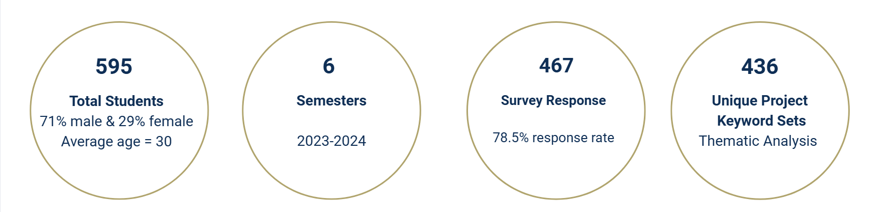
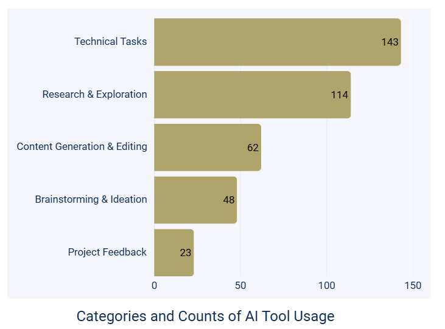
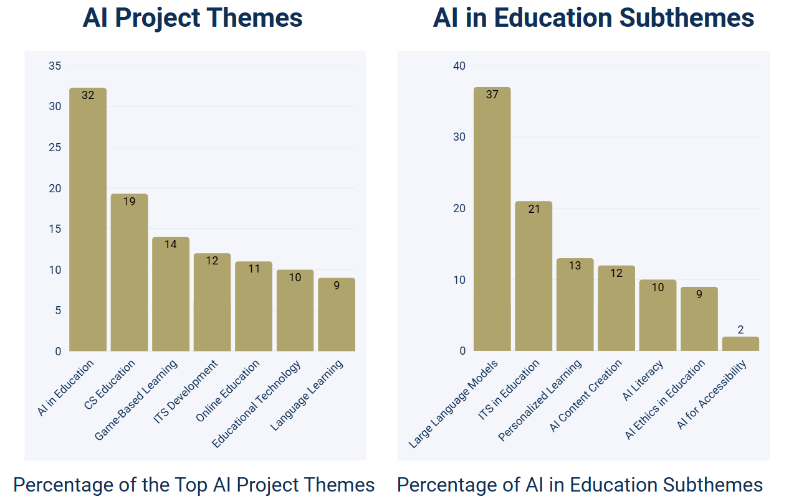

A paper I co-authored with David Joyner, The Dual Role of AI in Online Project-Based Learning at Scale, just came out in the ACM Learning @ Scale conference proceedings, and I wanted to give you a quick peek at what we discovered.
The big picture
There have been a lot of discussions on learning about AI and learning with AI. What caught our attention was something different: students weren't just using AI, they were creating with it in their course projects. This led us to explore what we call the "dual role" of AI in project-based learning.
We analyzed student projects and course survey data collected from an online graduate course on educational technology over six semesters (2023–2024). Students worked on a semester-long project in one of three tracks: Research, Education, or Development. What we found was pretty remarkable: students were engaging with AI in two distinct ways that complemented each other beautifully.

AI as learning assistant
First, there's AI as a learning assistant. About three-quarters of the students used AI to support their project-based learning in various ways: assisting in technical tasks, research and exploration, content generation and editing, brainstorming and ideation, and project feedback. Interestingly, some used ChatGPT as a "therapist" for stress management during intense project phases. Others used AI to generate alt-text for accessibility or create voice-overs for their presentations. One student even used AI as a simulated interview subject for their research!
Students used AI to support project-based learning in various ways.

AI as creation medium
Here's where it gets really interesting. When we analyzed what students were actually building for their projects, AI in Education emerged as the most popular theme, appearing in nearly one-third of all projects (32.3%). Within the 141 projects focused on AI in Education, we identified distinct subthemes representing different approaches to AI integration. The variety was impressive.
Students weren't just using AI. They were creating AI-driven educational tools.

What does this mean?
The dual role we observed suggests something important: students are not just consumers of AI technologies. They're transitioning from AI users to AI creators.
This has real implications for how we design educational experiences. Instead of choosing between "teaching about AI" or "using AI tools," we can do both simultaneously through well-designed project-based learning environments.
The bigger questions
Our research also highlighted some areas that deserve more attention. While students showed strong interest in AI ethics (8.5% of AI projects), we'd love to see even more emphasis on responsible AI development. Similarly, AI for accessibility represented only 2.1% of projects, a missed opportunity given AI's potential to make education more inclusive.
What's next?
This study gives us a snapshot of how graduate students engage with AI in project-based learning, but it raises so many more questions. How do these experiences shape students' long-term attitudes toward AI? What happens when we apply these approaches in different disciplines or with different student populations? How can we better scaffold the transition from AI user to AI creator?
An AI Fluency Framework
To me, the dual role of AI calls for a broader definition of AI fluency, one that encompasses not only how students use AI tools but also how they build knowledge of AI and create with it.
That reflection led me to develop the following AI Fluency Framework, which illustrates three interwoven dimensions of learning:
- AI Knowledge: understanding how AI works, its applications, ethics, and social impact
- AI Skills: using AI tools productively for learning, research, and creativity
- AI Creation: designing, building, and reflecting on AI-driven solutions
I hope this model offers a helpful lens for educators, designers, and researchers exploring AI literacy and fluency.

Want to dive deeper?
- Read the full paper for the methodology, detailed results, and implications for curriculum design.
- Check out an earlier paper, Seven Years of Online Project-Based Learning at Scale, if you are interested in how this course was designed as a model of online project-based learning at scale.
- Still interested? See the book, Designing Socially Dynamic Digital Learning, for technologies and strategies for engaging students with online project-based learning.
How to cite this post
Ou, C. (2025, July 22). An AI Fluency Framework. https://engagedigitallearning.com/blog/ai-fluency-framework/